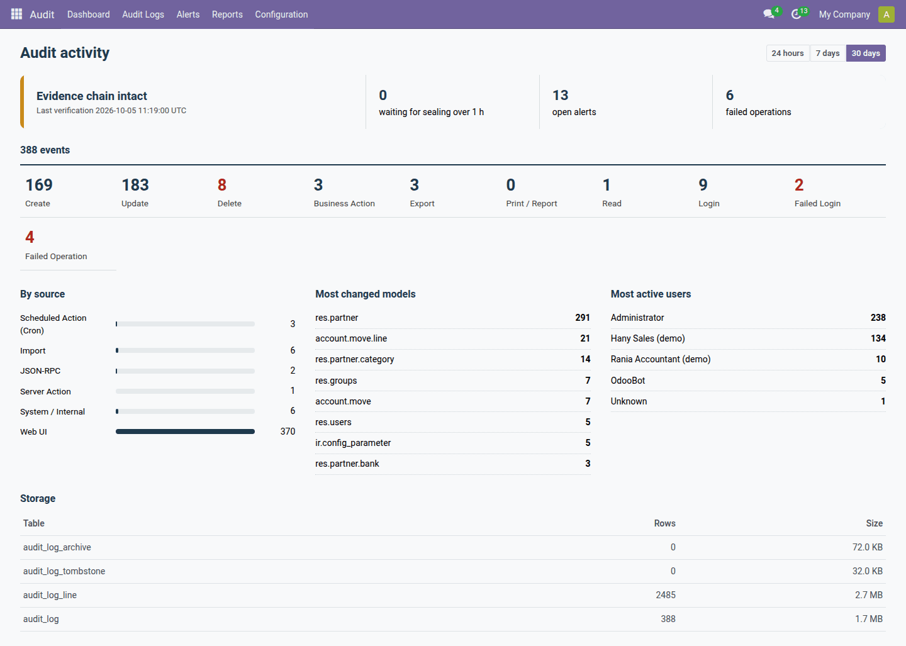
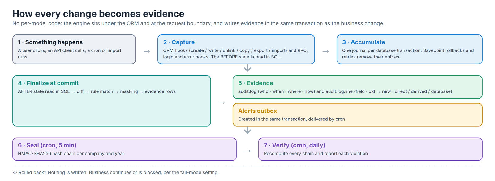
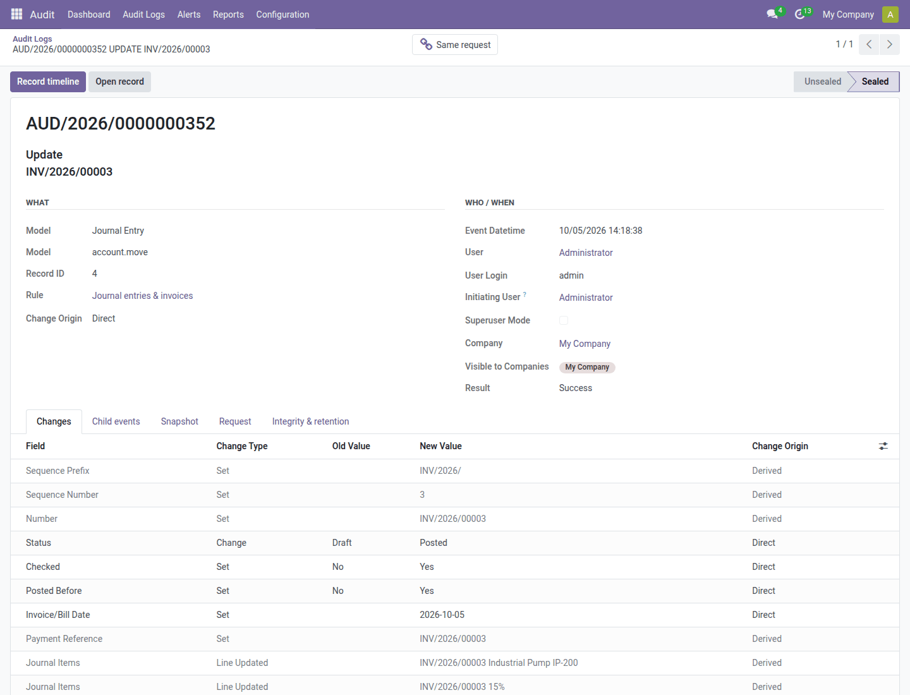
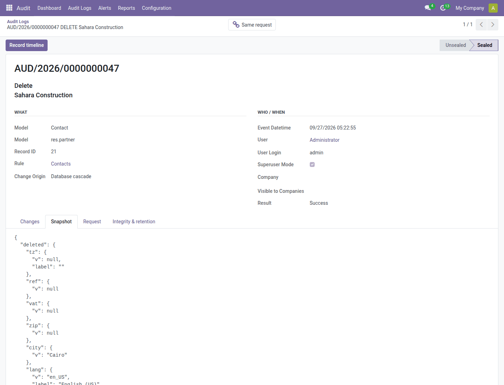
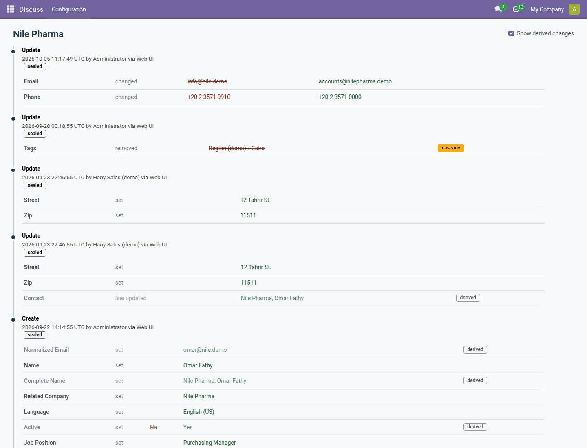
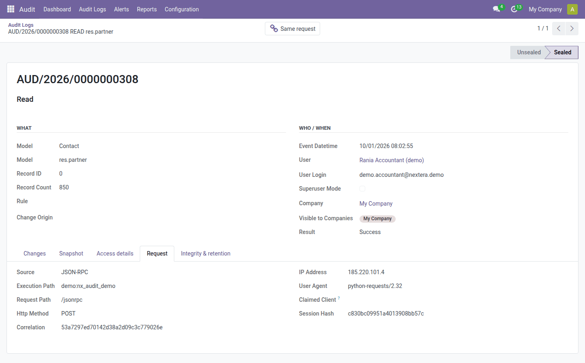
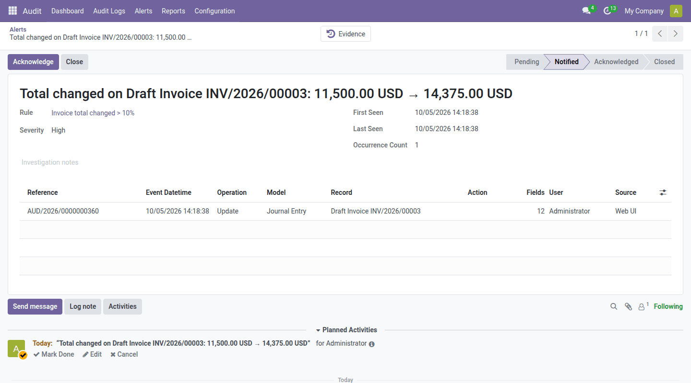
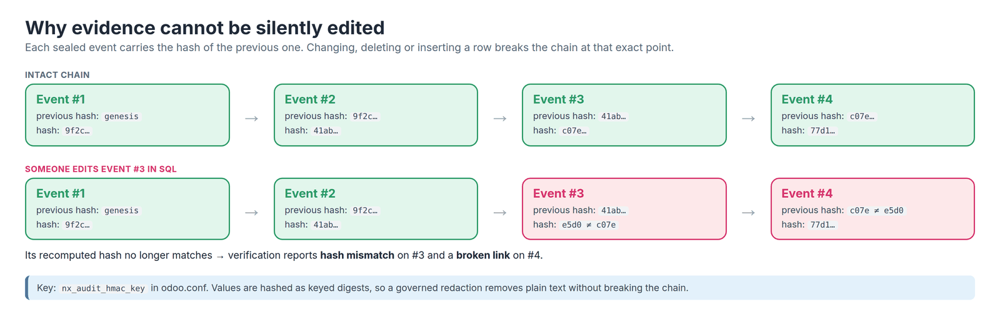
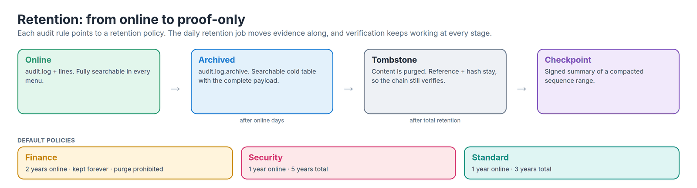
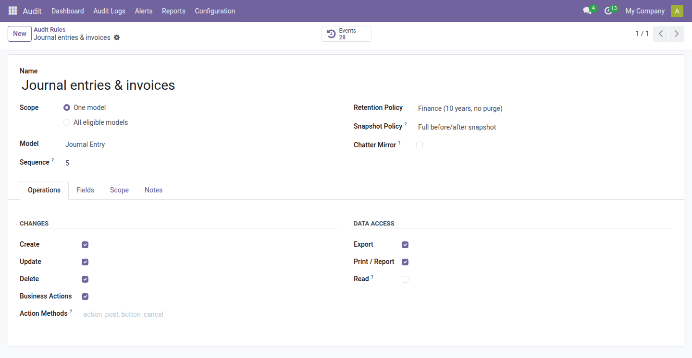

Who changed what, when, from where - and the proof that nobody altered the record. A tamper-evident audit trail for any Odoo model, with no per-model code.

Most fields are not tracked. An invoice total, a price or a supplier IBAN can change and the old value is lost.
A deleted record is gone. Nobody can say what it contained, or who removed it.
Chatter can be deleted, server logs are technical, exports and API reads leave no trace.
Under the ORM and at the request boundary, in the same transaction as the business change. Rolled back = no evidence; committed = always evidence.
Evidence is read-only for everybody and sealed into HMAC-SHA256 hash chains verified every day.
Alerts on deleted entries, changed totals or bank accounts, privilege changes, mass deletion and brute force.







odoo.conf.

| Question | Standard Odoo | With nx_audit_log |
|---|---|---|
| Who raised this invoice total by 25 %? | Unknown | User, IP, time, old → new + alert |
| What did the deleted customer contain? | Gone | Full delete snapshot + cascade effects |
| Who changed the supplier's bank account? | Unknown | Critical alert within 5 minutes |
| Who read our customer list through the API? | Invisible | Bulk read event with client and IP |
| Can we prove the log was not edited? | No | Daily hash-chain verification |
| Can we erase a person's data on request? | Not safely | Four-eyes redaction, proof still valid |
Default audit and alert rules are created for your installed apps.
Add nx_audit_hmac_key to odoo.conf and keep it with your backups.
Audit User, Manager, Administrator; choose alert recipients.
Review the rules, activate the broad rule if needed, load defaults after new apps.
nx_audit_log_demo fills a test database with realistic evidence.
Odoo 18 · Community & Enterprise · Depends on base, web, mail, base_import · Sayed Anwar